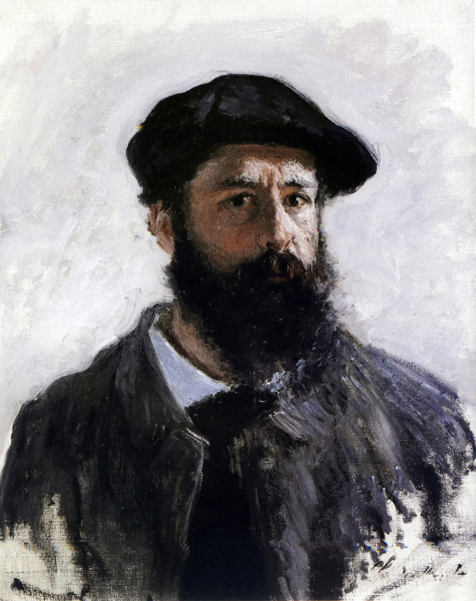
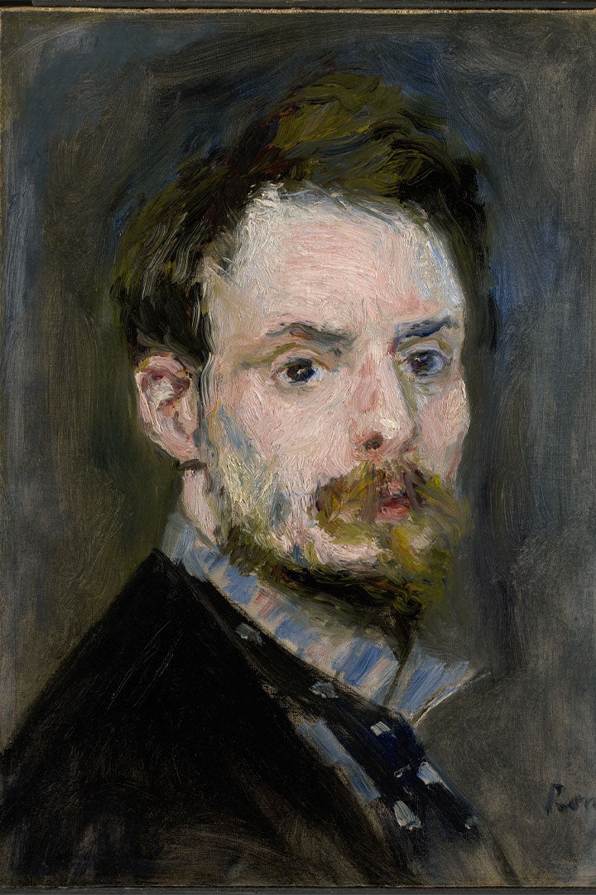
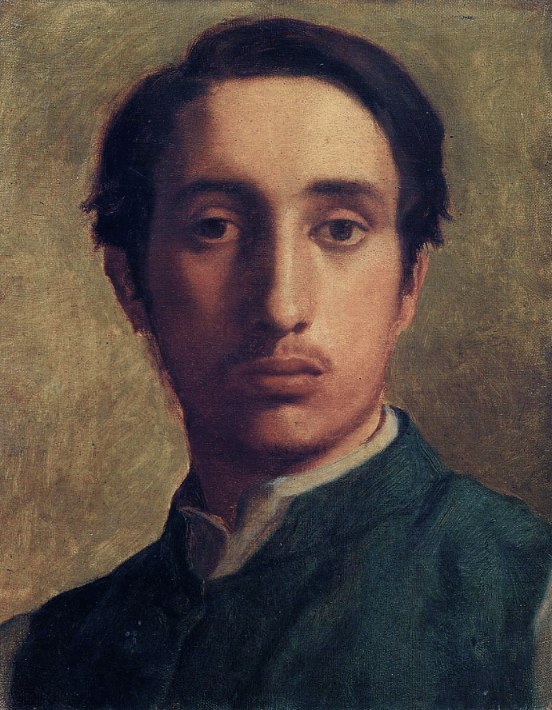
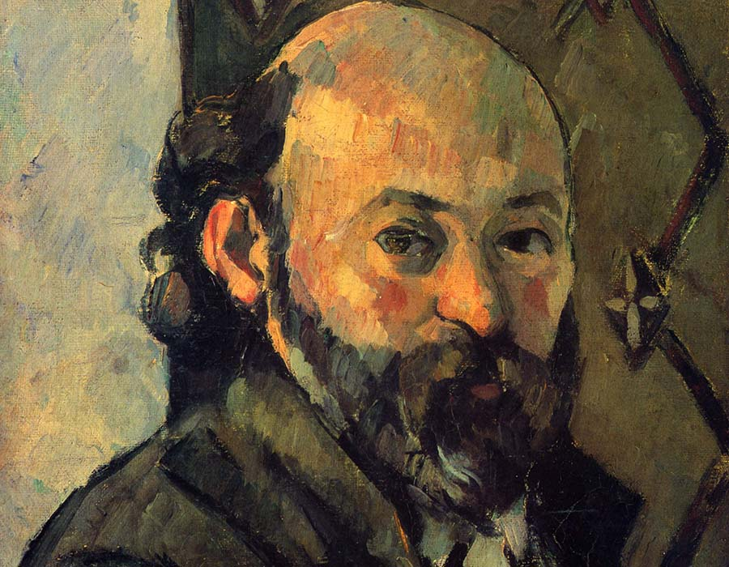
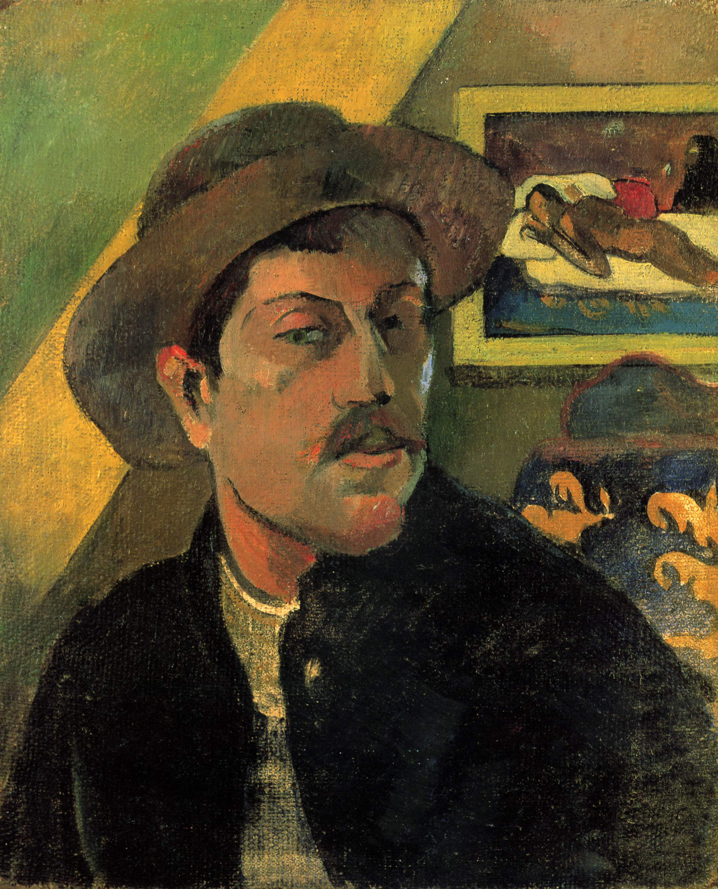
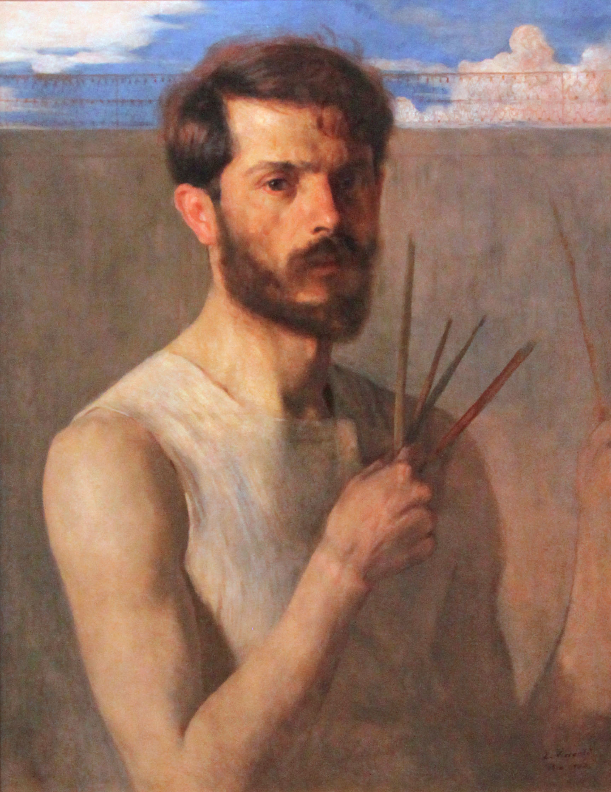
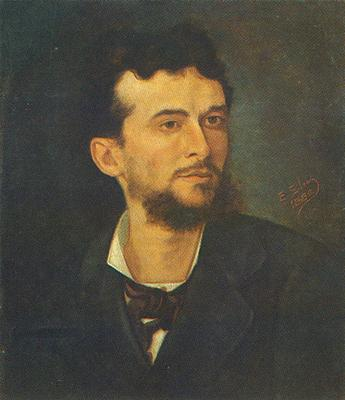
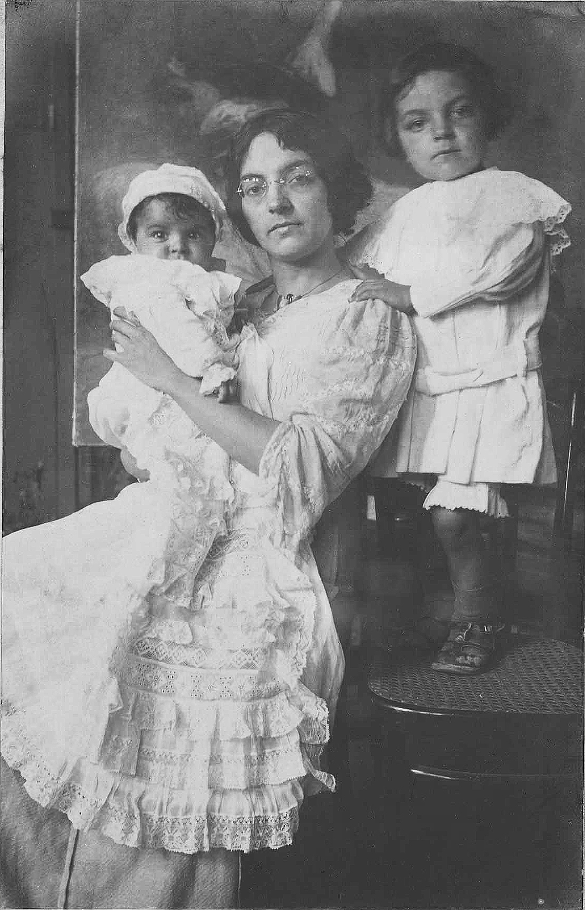

Artistas do Impressionismo

Claude Monet
Considerado o principal expoente do Impressionismo, Monet explorou a luz e as variações atmosféricas em obras como Impressão, nascer do sol e Ninféias.

Pierre-Auguste Renoir
Renoir retratou cenas alegres e vibrantes do cotidiano francês, com destaque para O Almoço dos Remadores e Baile no Moulin de la Galette.

Edgar Degas
Famoso por representar bailarinas, Degas capturou o movimento e a espontaneidade em obras como A Aula de Dança.
Artistas do Pós-Impressionismo

Vincent van Gogh
Com pinceladas intensas e cores expressivas, Van Gogh produziu obras como Noite Estrelada e Os Girassóis, marcando o expressionismo moderno.

Paul Cézanne
Cézanne buscou a estrutura e o equilíbrio na pintura, sendo uma ponte entre o Impressionismo e o Cubismo, com obras como Montanha Sainte-Victoire.

Paul Gauguin
Explorou cores simbólicas e temas exóticos, como em De onde viemos? O que somos? Para onde vamos?.
Artistas do Impressionismo Brasileiro

Eliseu Visconti
Considerado o pioneiro do Impressionismo no Brasil, destacou-se pelo uso de cores luminosas e pela influência direta dos pintores franceses.

Giovanni Battista Castagneto
Retratou paisagens marítimas brasileiras com pinceladas soltas e ênfase na luz natural.

Georgina de Albuquerque
Uma das primeiras mulheres a se destacar no cenário artístico brasileiro, conhecida por sua obra Sessão do Conselho de Estado.